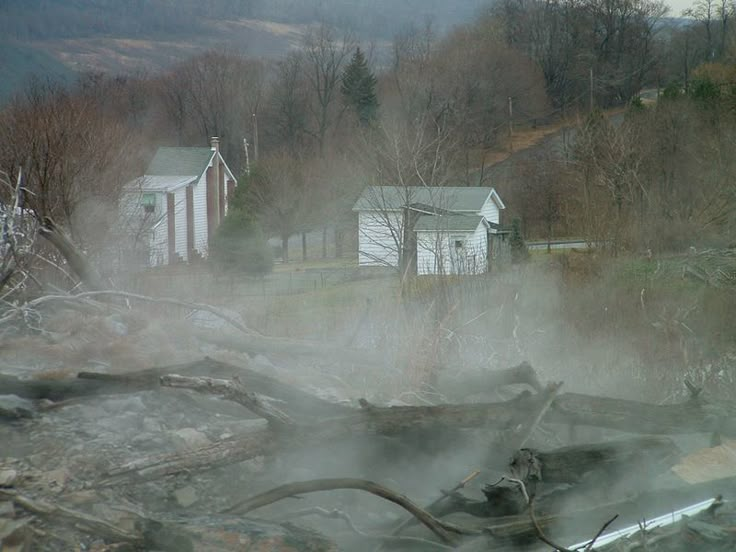

Centrelia, Pennsylvania was a small mining town, boasting about 3000 residents. It had a steady economy surviving the Stock Market Crash of the 1920's and The Great Depression. In May of 1962, the town needed to get rid of their abandoned mine they turned into a garbage dump. Instead of other methods, they decided to set it on fire. The problem with that occurred because underneath, there were many abandoned mine tunnels. The fire spread and continues to do so until this day. The town was evacuated and cleared as the smoke started to enter homes and cause health problems. Today, it is largely empty save for seven residents. According to Pennsylvania's Department of Environmental Protection, it will continue to burn for another century.